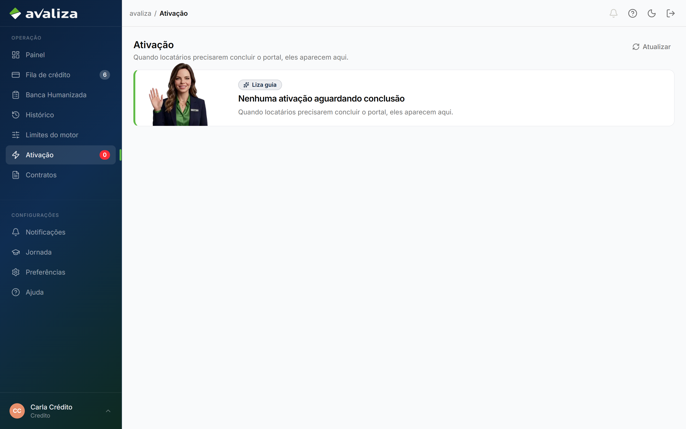

Fazer vigorar · jornada independente
Ativação do locatário
Dono do resultado: Portais do locatário — Dono de produto / ops dos portais (sem shell)
- Gatilho
- Link /ativacao/{token} no e-mail/SMS. O locatário não tem login no shell.
- Resultado
- Cadastro, biometria e termos concluídos — ou travado na fila interna.
- Lifecycle
- Token próprio (demo-nova). Independente da assinatura ZapSign.
- Atores na operação
- Locatário (portal, sem shell)
portal - Analista de crédito
credito - Analista de CS
cs
- Locatário (portal, sem shell)
- Dono (setor)
- Portais do locatário
- Outros setores
- Crédito Customer Success
Sem linha do tempo forçada
Este ciclo não tem etapas ordenadas. A tela abaixo é evidência, não passo 1 de N.
Telas (evidência)
Superfícies atuais onde este ciclo aparece. Abrir a tela não significa avançar uma etapa.

/ativacao/demo-nova · evidência, não etapa
/ativacao · evidência, não etapa
/ativacao · evidência, não etapaIsto não é esta jornada
- A fila /ativacao é acompanhamento. Quem executa é o locatário no portal.
- Não confundir com board /cs/ativacao — essa rota não existe neste build.